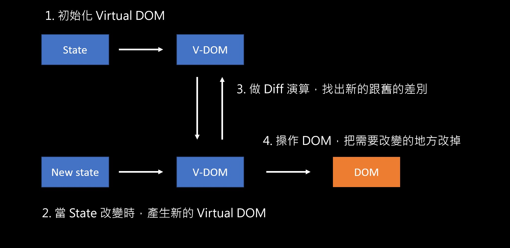
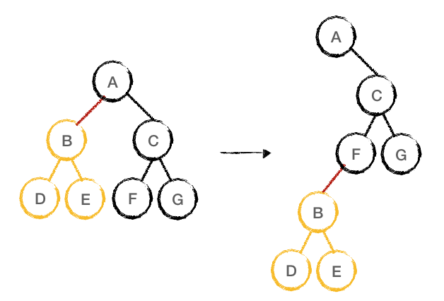

聽起來很厲害的感覺。
簡述
先說重點：
- Virtual DOM 本身是一個 JavaScript 的「物件」
- DOM 是瀏覽器所產生出來的「資料結構」
不要把這兩個東西搞混了。
會有 Virtual DOM 是因為直接操作 DOM 的成本很高，所以需要透過它來解決這個問題。
簡單來說，會先把原本的 DOM 複製一份變成 Virtual DOM。
Virtual DOM 的內容大概就這樣（只會存跟畫面比較有關的東西）：
1 | { |
而當畫面或資料改變時，就再產生一個新的 Virtual DOM，去跟舊的做比對（diff / Reconciliation），最後才去操作 DOM 把真的要改的地方改掉。
流程大概是這樣：
- 根據最開始的 DOM 來建立初始的 Virtual DOM
- 當 state 發生改變時，在產生一個新的 Virtual DOM
- 執行 diff 演算法，把新舊的 Virtual DOM 做比對
- 找出真正要改變的地方以後，才去操作 DOM

總之透過 Virtual DOM 的方式就可以省下操作 DOM 的成本。
關於 Diff 演算法
Diff 演算法是用兩顆樹（一種資料結構）來做比對，但通常這個步驟非常繁瑣，就算是用最少步驟也得要 O(n³) 的時間複雜度才行，所以 React 不可能這樣做。
React 的做法是做了一些優化，第一種是像下圖這樣：

當它發現 A 下面的 B 消失時，會直接把 B 節點砍掉重練，直接生一個新的，不會再去比對 B 的子節點。
第二種是 key，就是在渲染一系列 component 的時候會加上的那個 key。它的用意就是要讓 diff 時可以有一個根據，更快的找出哪裡發生了改變。